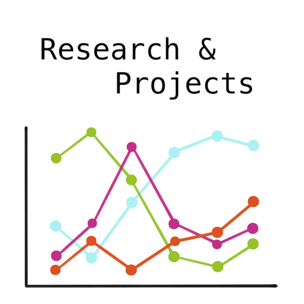
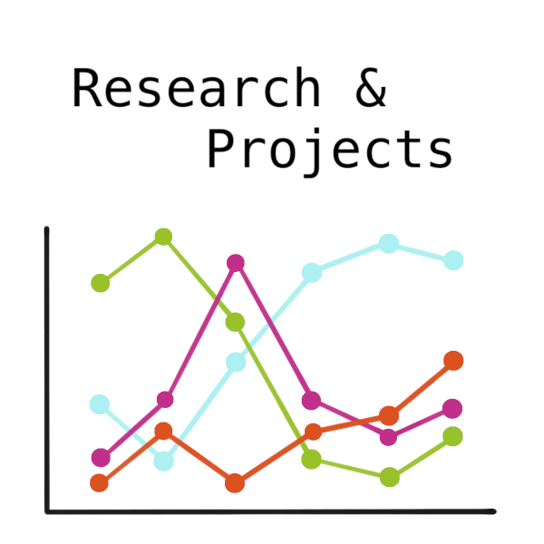

|
- (with J. W. Bourgeois, S. Kher, D. Knox, G. Lanzalotto, and T.A. Wong) How to Use Causal Inference to Study Use of Force, CHANCE, 37:4, 6-10, DEcember 2024. https://doi.org/10.1080/09332480.2024.2434435.
- (with C. Kelling, A. Mendible, S. Brooks, A. Wiedemann, M. Aminian, W. Hasty, J. Higdon) Data Collection and Analysis for Small-TownPolicing: Challenges and Recommendations, Statistics and Public Policy, July 2024. https://doi.org/10.1080/2330443X.2024.2379270.
- (with D. Gordon, K. Knudson, J. Cheng) A Multi-Method Data Science Pipeline for Analyzing Police Service, The American Statistician, 1-18, July 2024. https://doi.org/10.1080/00031305.2024.2374275.
- (with C. Börgers, N. Dragovic, A. Haensch, A. Kirshtein) Particle Method for Continuous Hegselmann-Krause Opinion Dynamics. In Complex Networks & Their Applications XII (pp. 1-13). Springer Nature Switzerland AG. 2024. DOI: 10.1007/978-3-031-53499-7.
- (with E. Tronci, B. Moynihan, B. Moaveni) Regularized Hidden Markov Modeling with Applications to Wind Speed Predictions in Offshore Wind, Mechanical Systems and Signal Processing, Vol. 211, 2024.
- (with C. Börgers and N. Dragovic) Political Centrism and Extremism: A Mathematical Analysis, SIAM News Research, Jan. 2024.
- (with C. Börgers, N. Dragovic, A. Kirshtein, and L. Orr) ODEs and Mandatory Voting, CODEE Journal special issue on Engaging the World: Differential Equations Influence Public Policy, Vol. 17, Article 11, 2024.
- (with B. Boghosian, C. Börgers, N. Dragovic) A blue sky bifurcation in the dynamics of political candidates, The American Mathematical Monthly, Published online: 15 Dec. 2023. DOI: 10.1080/00029890.2023.2286221. (final version available at arXiv:2302.07993.)
- (with N. Dragovic, C. Börgers, B. Boghosian) A geospatial bounded confidence model including megainfluencers with an application to Covid-19 vaccine hesitancy, The Journal of Artificial Societies and Social Simulations, 26(1) 2023, 8.
|
 
